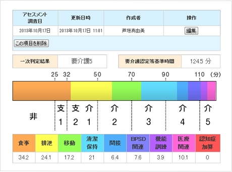
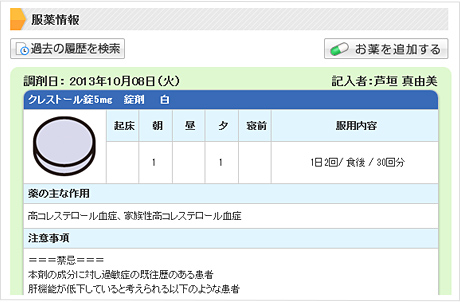

医療介護連携を支援在宅医療システム
国が進めている「安心して暮らせる街づくり」を実現させる為に考えられた地域包括ケア。
ここで欠かすことができない考え方は、「在宅医療と介護の情報共有」です。
これをクラウドサービスで実現し、モデル事業での実証と検討を繰り返してブラッシュアップし、洗練されたシステムを低価格でご提供いたします。
カナミッククラウド
超高齢社会に必須となる連携システム
終末期の療養場所について、「自宅で療養したい」と考えていらっしゃる方は全体の6割以上といわれています。
このような希望を叶えるためには、在宅医療をはじめ、看護・介護の専門職の方々が効率的に連携を行うための情報共有システムが必須です。
カナミックネットワークは医療・看護・介護分野に特化したクラウドサービスでこれからの超高齢社会を支えます。
クラウドサービスだからできる課題解決
医療・看護・介護・自治体といった多職種・他法人間の垣根を越えた情報共有を容易にし、地域包括ケアを実現するための必須ツールです。
もちろん皆様が安心してご利用いただくために高度なセキュリティに対する取り組みを行っております。
在宅医療システムコンセプト
システム内でできる「情報共有」 + 「コミュニケーション」
地域包括ケアシステムを実現するためには、在宅医療の推進と多職種連携が必要です。
これを可能にして注目を浴びているのが、カナミックネットワークが提供する情報共有システムです。
医療・看護・介護の専門職で必要とされる情報をシームレスに提供し、チームケアを実現しています。
多職種・他法人間連携のための高機能なメニューを数多く搭載しており、共有される膨大な情報をただ集約するだけでなく、検索・閲覧のしやすさと分析データとしての活用も考慮した機能性を備えています。
住み慣れた地域で暮らす高齢者の方々に質の高いサービスを提供するための唯一の情報共有基盤であると自負しております。
カナミックの情報共有システム3大機能
掲示板形式でお互いのスケジュールを気にせず、関係者間で気軽にコミュニケーションができます。
参加者を限定して情報共有ができる安全性の高いシステムです。
他の参加者の閲覧状況や反応、書き込みに対するコメントなどがわかり、情報共有が活性化されます。
マルチデバイス対応で、エクセル、ワード、PDFファイルはもちろん、写真や動画のファイルをアップすることもでき、参加者がお互いの情報をわかりやすく共有できます。
記録した情報をまとめて閲覧。
共有をよりスムーズに。
バイタル情報やインアウトバランスなどもタイムライン形式で自動でケアレポート上にアップされるため、患者様の近況が即座にわかります。
コミュニティ参加者のケア情報やコミュニティへのコメントなどの状況をカレンダー上で視覚的に確認できます。
医師や看護師の訪問日、介護サービス内容と日時などのスケジュール情報を共有できます。
看護業務記録などの業務システム内の入力情報をコミュニティー上で共有できます。
また、ケアレポートへの書き込みもカレンダー上で確認できます。
多職種・他法人間連携をする上で必要な
・患者様の基本情報
・家族情報
・介護サービス利用状況
・医療情報
・住宅情報
・認知項目
・ＡＤＬ評価（日常生活動作）
・ＦＩＭ評価（機能的自立度評価）
・既往歴
・看取りに関する意向
など、標準化できる情報を共有できます。
グラフィカルで操作性の高いインターフェイスになっておりますので、様々な方々が関わる医療・介護の現場においても使いやすいシステムです。
その他、医療・介護連携に必要な高機能ツールを搭載

▲「要介護認定・ADL評価」機能

▲「お薬手帳」機能
カナミッククラウドサービスは東京大学高齢社会総合研究機構と共同研究を行い、モデル事業において実証とブラッシュアップを続けてきました。
今後の医療・介護連携にとって必要な機能、共有すべき情報を現場から吸い上げ具現化した高機能なツールが満載のシステムとなっております。
入力したアセスメント項目を即座に自動分析し、判定結果をわかりやすく表示できる「要介護認定・ADL評価」機能
服用している薬品の剤形や色を画像やイラストを使って記録し、服用内容やアレルギー情報とあわせて共有できる「お薬手帳」機能などなど、、
常に機能アップし進化しつづけているシステムです。
利用シーン
【シーン1】
診療所と診療所の連携の場合（機能強化型 在宅療養支援診療所）
一人医師の診療所・クリニックの場合、例えば学会等で出張している場合には、緊急電話がかかってきても対応することが困難な状態です。そのような状況を想定して「機能強化型」を組んでいただいていますが、患者様の情報についてはクラウドの情報共有システムで確認してから向かう事で、迅速な対応が可能になります。
【シーン2】
在宅医師と介護の情報共有の場合
患者様の枕元に置かれた介護ノートを運用をしているところは多いと思われますが、介護ノートはその場に行かなくては見れないというデメリットが有ります。この介護ノートを関係職種が共有できるクラウドに置き換えたらその場に行かなくても閲覧でき、訪問する前にチェックすれば準備もできる。更にチームで支えているという意識も高まるので、患者様も安心して療養生活が過ごせます。
【シーン3】
同職種間の情報交換の場合
例えば医師会員の部屋を作って連絡事項や情報交換の場に使ったりとグループウエア的な使い方もできます。
実際には、在宅の医師が診療科目以外の事を他の医師に尋ねて助言を求めることや、ケアマネジャーの情報共有のページでは、困難ケースの相談をしたりと、使い方はさまざまです。
導入事例
システムユーザー実績
の医療法人・介護事業所、
全国でへの導入実績がある安心と信頼のシステムです。
（、無料ユーザーを含む）

千葉県柏市(柏モデル)
柏市役所や柏市医師会の平野先生が中心となって柏市で取り組まれております、「試行WG」にて、本システムが活用されております。
この「試行WG」では、「顔の見える関係構築」と「情報共有システムを活用したオンラインの関係構築」が行われており、病院、診療所、在宅療養支援診療所、歯科、薬局、訪問看護、居宅介護支援、地域包括支援センター、介護サービスなどが参加しております。
在宅医ネットよこはま
横浜市の在宅医グループが診療所同士の連携と多職種を巻き込んだ連携を組むために利用を開始した事例です。
各診療所の先生が患者様を登録して、介護のケアマネジャーや看護師、ヘルパーを巻き込むことにより、安心できる街づくりを目指している。